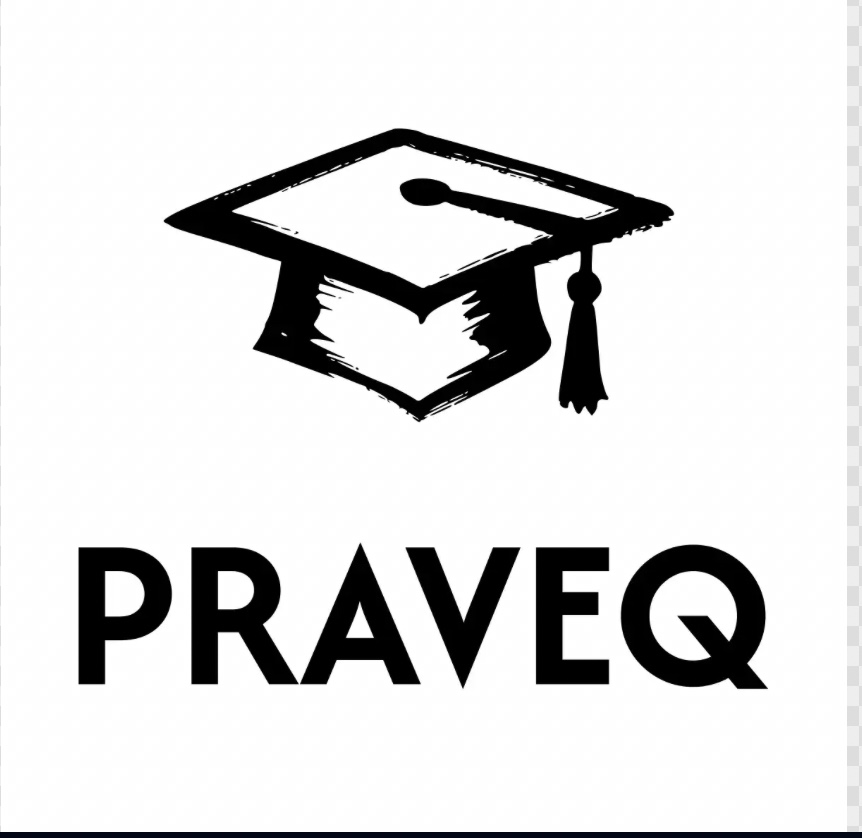

まず、いまの現在地を
正確に知る。
単語・読解・英作文・リスニングの状況を確認。目標級だけでなく、合格までに必要なことを一緒に見極めます。

無料相談を予約するPRAVEQ / HIGH SCHOOL EIKEN® MENTOR / 01
英検®2級・準1級の合格を通じて、
自分で決め、毎日動き、結果を出す力を育てる。
高校生のための英検メンター、PRAVEQ。
2級 / 準1級高校生専門
月4回・50分個別コーチング
毎日学習サポート
PRAVEQ MANIFESTO / 02
大きな夢は、特別な誰かだけのものではない。
目標を決める。今日やることを決める。できなかった日も、また次の日に立ち上がる。
その小さな選択の積み重ねが、いつか「自分にもできる」という揺るぎない自信になる。PRAVEQは、英検®をその最初の舞台にする。
FOUNDER'S STORY ↘THE FUTURE IS NOT FOUND. IT IS MADE.
WHY A MENTOR / 04
メンターは、答えだけを教える先生ではありません。
目標に向かう中で迷ったとき、何を優先し、どう行動すればいいかを一緒に考える存在です。
英検®の問題を解けるようになること。それだけでなく、自分で目標を定め、毎日の行動を積み重ね、結果を出せる人になること。
PRAVEQは、その最初の伴走者でありたいと考えています。
FOUNDER'S STORY / 05
Shu
Founder & Coach
青山学院大学
文学部 英米文学科 在籍中
1500m 3:53.70
英検®1級

夢を失った日、
次の夢が始まった。
高校時代の僕は、陸上競技の1500mでインターハイを目指していました。3分53秒70という記録を残しながらも、度重なる疲労骨折によって、走り続けることを断念しました。
長く追いかけてきた夢を失ったとき、次に目を向けたのが英語でした。憧れの大学に進み、英語を話せる、かっこいい男になりたい。その一心で青山学院大学 文学部 英米文学科に現役合格しました。
大学1年の冬。海外経験なしで、英検®1級を独学で取得しました。特別な才能があったわけではありません。目標を定め、できることを毎日積み重ね、苦しい日にも前へ進むことを選び続けただけです。
競技でも英語でも、人生を変えたのは「今日の一歩」でした。だからPRAVEQでは、英検®の合格だけで終わらせない。挫折や迷いの先でも、自分で次の夢を見つけ、踏み出せる人を育てたいと考えています。
自身の体験を、いま同じように挑戦している人へ還元したい。その思いから、PRAVEQを立ち上げました。
— Shu
AFTER YOU JOIN PRAVEQ
単語・読解・英作文・リスニングの状況を確認。目標級だけでなく、合格までに必要なことを一緒に見極めます。
トライアルテストと面談をもとに、あなた専用の学習ロードマップを作成。部活や学校行事も踏まえて、実行できる計画にします。
ロードマップを共有したらコーチング開始。毎週のオンライン面談と日々のサポートで、合格まで前に進みます。
THE WEEKLY RHYTHM
コーチがいるのは週1回だけではありません。学習を止めないためのリズムを、毎週一緒につくります。
THE PRAVEQ PLAN
毎日の学習サポートと、あなた専用の合格ロードマップが含まれます。
PRAVEQ MENTOR
月額19,800円（税込）
月4回の個別オンライン面談と毎日のサポートで、英検®2級・準1級の合格まで伴走します。契約前には、初回50分の体験コーチングを無料で受けられます。
無料相談を予約する →3か月ターム・任意更新です。月額を3回に分けてお支払いいただけます。
HOW TO START
目標級、受験時期、英語の悩み、学校生活の予定を伺います。
契約前に、実際のコーチングを体験。PRAVEQとの相性を確かめられます。
現状と試験日から逆算し、あなた専用の学習プランをご提案します。
月4回の個別指導と毎日のサポートで、合格まで伴走します。
FREE CONSULTATION
無料相談では、目標級までの道のりと、今から優先すべき学習を一緒に整理します。ご希望の方は、契約前に初回50分の体験コーチングも無料で受けられます。
無料相談15分／対象：英検®2級・準1級を目指す高校生